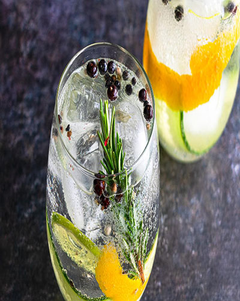
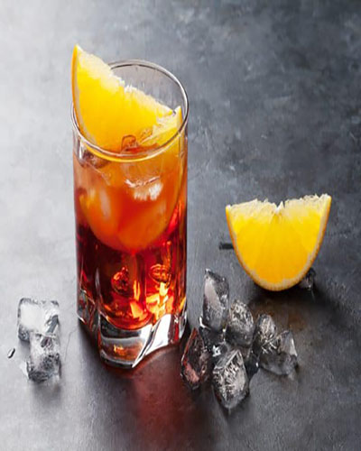

Gin tonic
Perfecta mezcla de gin, agua tónica y un toque de ingredientes naturales como frutas, especias o hierbas que resaltan los botánicos del destilado.
negroni
Amargo y seco, pero muy sabroso, toma su profundidad del vermut, se centra en el agridulce Campari y se hace perfecto a través de la vitalidad de la ginebra.
gin de frutos rojos

Es uno de los tipos de gin tonic más apetecibles. Las frutas y el azúcar se combinan a la perfección con la ginebra y contrarrestan parte del amargor del gin tonic.
gin añejado con hielo

Una bebida con mucha personalidad y carácter por sus sabores complejos a Roble, Vainilla y Frutos rojos, con buen Cuerpo. Ideal para degustarse solo, en las rocas o en mezclas que mantengan su identidad.